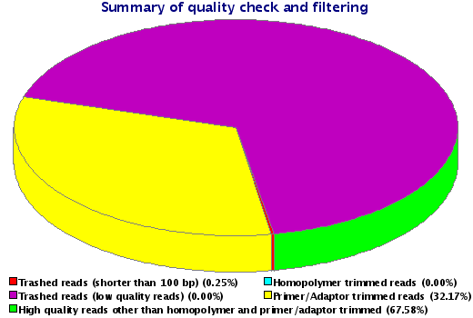
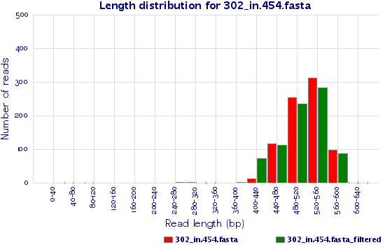
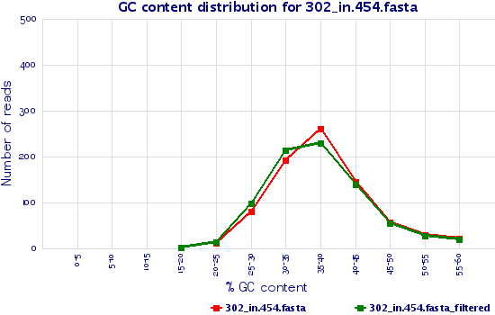
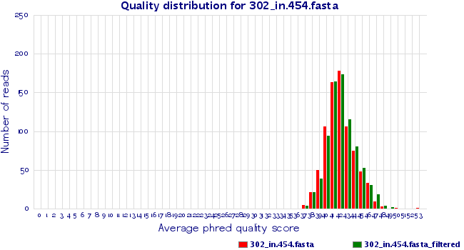
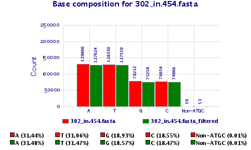

| Results of quality control (QC) using 454QC.pl v2.3
(Mon Dec 21, 2015) |
| Input files and parameters: |
| Analysis type | Quality check and filtering of 454 data |
| Input file directory | /home/genomica/Data/302/ |
| Input sequence file | 302_in.454.fasta |
| Input quality file | 302_in.454.fasta.qual |
| Input file format | 454 format (FASTA and QUAL) |
| Primer/Adaptor library | Rapid Library (Standard)
|
| Homopolymer trimming | Off
|
| Length of the homopolymer to be removed | NA |
| Length filter | On
|
| Cut-off for minimum read length | 100
|
| Cut-off read length for HQ | 70%
|
| Cut-off quality score | 20
|
| Only statistics | Off |
| Number of processes | 1
|
|
| Output files: |
|
|
| |
| Results of QC |
| QC statistics |
| File name | 302_in.454.fasta |
| Total number of reads | 799 |
| Total number of trimmed reads containing homopolymer | 0 |
| Total number of trashed reads (<100 bp in length after trimming) | 2 |
| Total number of low quality reads (excluding <100 reads) | 0 |
| Total number of HQ reads | 797 |
| Percentage of HQ reads | 99.75% |
| Total number of bases | 413118 |
| Total number of bases in HQ reads | 412959 |
| Total number of HQ bases in HQ reads | 342837 |
| Percentage of HQ bases in HQ reads | 83.02% |
| Number of Primer/Adaptor trimmed reads | 257 |
| Total number of HQ filtered reads | 797 |
| Percentage of HQ filtered reads | 99.75% |
|
| Detailed QC statistics |
| File name | 302_in.454.fasta | 302_in.454.fasta_filtered |
| Total number of reads | 799 | 797 |
| Minimum read length | 65 | 269 |
| Maximum read length | 602 | 602 |
| Average read length | 517.04 | 508.61 |
| Median read length | 522 | 517 |
| N25 length | 544 | 542 |
| N50 length | 524 | 521 |
| N75 length | 499 | 487 |
| N90 length | 472 | 447 |
| N95 length | 454 | 424 |
| Total number of bases | 413118 | 405360 |
| Total number of HQ bases | 342972 | 337134 |
| Percentage of HQ bases | 83.02% | 83.17% |
| Average quality score (Overall) | 41.99 | 42.15 |
|
| Summary of QC |
Following pie chart shows the summary of QC depicting percentage of high quality, trimmed (homopolymer and/or contamination) and trashed (low quality and/or short) reads. |

(A) |
|
| Length distribution |
Following graph(s) show number of reads for sequence length range for input file, 302_in.454.fasta(A), before and after QC. |

(A)
|
|
| GC content distribution |
Following graph(s) show number of reads for distinct average GC content (%) ranges for input file, 302_in.454.fasta(A), before and after QC. |

(A)
|
|
| Quality distribution |
Following graph(s) show number of reads for different average PHRED quality scores for input file, 302_in.454.fasta(A), before and after QC. |

(A)
|
|
| Base composition |
Following graph(s) show base composition (count) for input file, 302_in.454.fasta(A), before and after QC with percentage of bases at the bottom. |

(A)
|
|